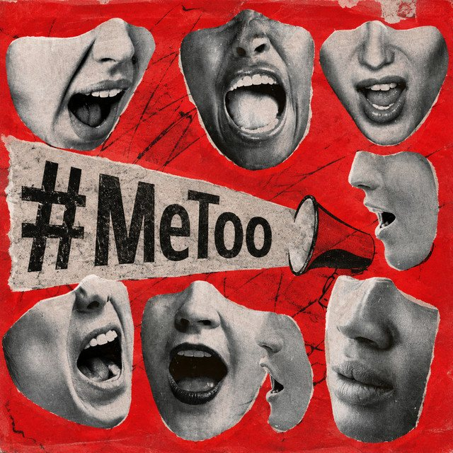

The Eclectic Polymath Podcast · Archive
#104 The "Me Too" Movement: Power, Exposure, and the Fight to Change Institutions

About this episode
The Me Too movement was not simply a wave of public allegations. It was a challenge to the systems that allowed harassment and abuse to remain hidden, normalized, and professionally protected for decades.
This episode traces the movement from Black feminist organizing and earlier civil-rights frameworks to the viral explosion of 2017. It looks at how nondisclosure agreements, forced arbitration, workplace hierarchies, and institutional silence shielded powerful people across industries—from Hollywood and media to low-wage labor.
We get into the cases that forced a cultural reckoning, the reforms that followed, and the limits of exposure on its own. This is a story about who gets believed, who remains vulnerable, and what it actually takes to turn public outrage into lasting institutional change.
Key points
- The Me Too movement was not simply a wave of public allegations.
- This episode traces the movement from Black feminist organizing and earlier civil-rights frameworks to the viral explosion of 2017.
- It looks at how nondisclosure agreements, forced arbitration, workplace hierarchies, and institutional silence shielded powerful people across industries—from Hollywood and media to low-wage labor.
More like this
 #217 A Different World: The Sitcom That Refused to EndOctober 16, 202651:08
#217 A Different World: The Sitcom That Refused to EndOctober 16, 202651:08 #204 Symbiopsychotaxiplasm: The Film That Watched ItselfOctober 11, 202645:01
#204 Symbiopsychotaxiplasm: The Film That Watched ItselfOctober 11, 202645:01 #180 Hello Kitty: The Strange Power of CutenessSeptember 27, 20261:07:30
#180 Hello Kitty: The Strange Power of CutenessSeptember 27, 20261:07:30 #175 Chris Hansen: When Investigative Journalism Became a SpectacleSeptember 24, 202653:33
#175 Chris Hansen: When Investigative Journalism Became a SpectacleSeptember 24, 202653:33